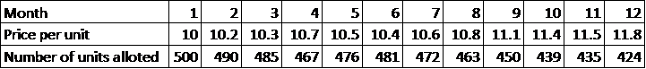

I do not have enough money now? What to do? DO SIP
You can start investing with Ekush with very small amount. Systematic Investment Plan (SIP) allows you to invest at least Tk.1,000.00 (multiple of Tk. 1000.00) on monthly basis. It will help you to build savings habit. It will bring the necessary discipline in life.
-
Cost-Averaging will minimize the market timing risk: For example, you invest 5,000 taka monthly. Say, the first buy price of the fund is 10 taka per unit. hence, you will get 500 units of fund.
Here is a hypothetical table provided below showing, how cost gets averaged over time with changes in per-unit price:
After one year, you will give Tk. 60,000 with average at 10.78 and total unit will be 5,582. Your investment shall grow to BDT (5,582 X 11.8) = 65,869 which is equal to 10% return.
Due to cost averaging, the difference between minimum & maximum return is also narrowed down with increase in investment horizon.
-
No worries about market timing: Share market is full of ups & downs. You want to be in the “up” not the “down”. That’s why people often ask “when’s the right time to get in the capital market??”
But through SIP you do not need to time the market.
Because, a) through SIP an investor is not investing directly in the stock market rather in a mutual fund which is a diversified fund. Mutual funds invest into fixed income securities & stock markets. And b) through cost averaging, you are getting more units when the unit price is low & you are getting more return when the unit price is high.
So, SIP is just absorbing the ups & downs of the market for you.
- Tax expense reduction: Bangladesh Income tax law considers the investment in a year in SIP as tax eligible investment for tax rebate like Sanchaypatra. You can reduce your tax expenses by investing in SIP.
- Investing in a disciplined manner: You get the same d
- Develops the habit of saving & investing: Through SIP, this small amount is automatically debited from your bank account every month. This small investment is not going to bring any change to your current lifestyle but provides you a substantial saving in the future. it is easy.
- Reduction of risk: The longer the investment horizon, the lesser the instances of negative return. Here is a graph of Crisil- AMFI equity fund ( an Indian Mutual fund) over the last 15 years showing how the instances of negative return moves towards 0% after 4 years. Because, during the span of years, SIP absorbs the associated risks & up-downs of the market.
Whenever we think about mutual funds, we think it’s like investing in the stock market directly. But that’s not the case. Mutual funds are much safer & superior profit-generating (much higher than Sanchaypatra) in the hands of an experienced fund manager.
By doing a SIP, you don’t have to chase the return. You just continue your investment; the return will chase YOU.
You can open SIP account in either of the two ways
- Registering as user and then purchase SIP in online ( WWW.ekushwml.com )
- You can come to Ekush’s office and fill up the application form.
BDT 1,000.00. You can open SIP account for multiple of BDT 1,000.00
After maturity of SIP, you can do any of the following options:
- Auto- Renewal: You can easily renew the SIP and it will be continued until further notice.
- Sell your investment: The matured amount will be kept as it is in your BO account. You can sell entire/partial amount.
- Remain invested: The matured investment will be treated as lumpsum investment till we get sell order from you.
Yes.
Yes.
Yes.